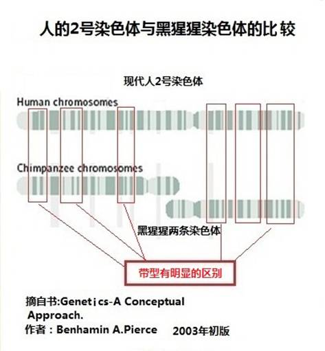

|
ΪʲôۻôIJ죿
III.
Why Are the Conclusions so Difference?
1.
BLASTȽϷȱ
1.
Defects in the Comparison Method BLAST
ôԭDNAƬȽϷȱɵġʹBLASTϱȽƬι̣ʹõѾܷӳ֮ˡһ룬ֱ2324ȫʹͬש鹹Ľﶼʹ31ש顣
Such a significant difference is caused by the defect of
random DNA segment comparison method BLLAST. By using the software BLAST which compares too short segments, the acquired data does not
reflect the real difference of genome between two species. Let us think
about it. Suppose two areas in the city each having 23 and 24 buildings
respectively. They all used four kinds of identical bricks. All the
buildings in the two areas are built with a huge quantity of bricks, i.e.
about 3.1 billion.
ȻЩȫͬõԳʽȽʱÿֻѡשеһשбȽϣĽﱻĽһ100%ķϡÿֻѡ300שϳɵһשƬνбȽϣש̫࣬·ϣȷһ֮ΪϣıȻܸߣDz˾жĽôơ
Although these buildings are completely different
architecturally, the test results of the buildings between the two areas
must be 100% the same with one another, if one brick from the four kinds is
chosen for comparison by the computer program. Percentage of largely
equality (if error of one or two bricks is deemed as equality) is still
high for too many bricks, if one building segment of 300 bricks is chosen
for comparison each time. However, you cannot argue that the buildings in
the two areas are identical with the above test.
ѡ300500DNAַƬε31DNAбȽϣҲֻDZȽ˺ɵIJ𣿵ǣ˺ɲĽƶȡ
Dont we usually compare similarity of nothing but composition
material between human beings and other animals by random choice, test
similarity, when the comparison of a 300-500 DNA letter segment in the
bank of 3.1 billion human DNAs is made? However, it is only an approximate
degree of composition material between human beings and other animals.
磬Գʽִȫ01ɣַΪһƬɨȽϵķʽȥȽֱƻ˾ƵĺܴĵԳʽһǰٷ֮ٵͬ300ַΪһƬҲһܸߡ100ַΪһƬҲһ͡Կ̵ܶƬαȽϵóĽֻзdzIJοֵ
Using another example, the final executable codes of the
computer program are all composed of 0 and 1. The result must be 100%
identical by using only two letters as one segment and comparing very
large computer programs written by Microsoft and Apple respectively through
random scan and comparison. If 300 characters are selected as one
segment, the similarity must be very high indeed. However, if one
segment consists of 1 million characters, the similarity must be
significantly lower. Therefore, the results by comparing very short segments are nothing but
very limited reference.
ı[ע5]BLASTõĽ˺ͺɵYȾɫDNAƶ98.3%(98.3% nucleotide identity)ǣлϸ±ȽϣȴֻMSY֮صĻԼһġת¼λǶô
In the above report of Page (Reference 5), the DNA similarity
of Y-chromosome between human beings and chimpanzees is 98.3% (i.e. 98.3%
nucleotide identity) according to the results by BLAST. However, by more
careful comparison of genes, we found two thirds of unique genes or gene
clusters in human MSY zone and one half of protein coding transcription
units. What a diametrically difference this is!
ˣBLASTԵĽȾɫɲϣDNAƣǻơ
Therefore, the test result of BLAST is similarity of
chromosome composition material (DNA) rather than similarity of actual
genes.
2.ͱȽ
2.
Discovery from Banding Pattern Comparison
ִ2ȾɫȾɫĴԵ
Banding pattern is significantly different between Human
Chromosome 2 and Two Chimpanzee Chromosomes.

ͼ 8-2 ˵2ȾɫȾɫ͵ıȽ
Figure
8-2 Banding Pattern Comparison between Human Chromosome 2 and Two
Chimpanzee Chromosomes
ͼ8-2ǹȥùıȽϷΪ˵2Ⱦɫ壬ɺɵȾɫںϳɵġôͱȽȾɫķǺܽƺʹֲڵģˣϸȥͼжӦεȾɫƻкܴˣȾɫ͵ıȽϣ֧˵2ȾɫɺɵȾɫں϶ɵۡ
Figure 8-2 illustrates that Human Chromosome 2 is formed from
a fusion of two chimpanzee chromosomes using a comparison method of the past.
To compare chromosomes by banding pattern It is very imprecise. Despite it,
a careful examination shows a significant difference in chromosomal banding patterns between the
two in corresponding
areas. Therefore, the comparison of chromosomal banding patterns does not
support the theory that Chromosome 2 is formed from fusion of two
chimpanzee chromosomes.
⣬ͼϻԿɵȾɫ壬˿Ⱦɫ壨submetacentric chromosomeںϿԸСĿǰȾɫںϼУ˿Ⱦɫںϣ7ݣûз˿ȾɫѷȾɫλںϵIJ
In addition, the above Figure also shows that the two
chimpanzee chromosomes are submetacentric chromosomes which have very low
probability of fusion. The current human chromosomal fusion diseases are
essentially due to the fusion of two acrocentric chromosomes (See Part 7).
There are no cases of
Robertson chromosome translocation and fusion from two submetacentric chromosomes.
ģDNA벻֧˺ͺɹ
IV.
DNA Decoding Does Not Support Ancestor Sharing Between Human Beings and
Chimpanzees
1.
BLAST
оDNAķ
1.
The Research Method BLAST Is Not A DNA Decoding Method
DNAص㣬ȾɫϣÿһDNA붼һȷλ㣬ÿһDNA붼ӦһλıšBLASTȽϵһDNAУȫDZȽϵȾɫϵλñšˣBLASTĽֻһйȾɫɲ״ĴԲοݡ
The unique characteristic of DNA decoding is that every marker
DNA code has a fixed position and every DNA code has a corresponding
position number on every chromosome or mitochondria. The BLAST method just
compares a DNA sequence segment
without consideration of the position number of the sequence on the
chromosome. Therefore, the result from BLAST is nothing but a rough
estimate of the chromosomal composition material status.
ѧоʹBLASTߣΪǽнƱȽϡäĿġѧǿDNAеŴȷ֮ĹϵûнƵġпǣһǵ789ַYȾɫ729ַ16569ԭʼDNAУһַġ
Molecular anthropology research has never used BLAST as a
research tool because this method is used only for an imprecise and
approximate comparison . Molecular anthropology depends on genetic markers
in DNA to define relationship between human beings because markers are not
an approximation. There are three markers identified in our bodies: 789
nucleotides for the first marker, 729 nucleotides marker for the
Y-chromosome, and 16,569 original DNA sequences for Mitochondrial Eve,
which are all precise without even one nucleotide in error.
ǰᵽM168ǾDNAϣһ̶صһַTȷȫ70˵Ļ֡еT9ǰ߳M168еCڷԭסصϵ֧ӣһӵϣһTһӵϣһCһһĿȻɴ˿ɼе룬ȫܹǵԴ
Marker M168 frequently mentioned above indicates that in the
human DNA sequences, a letter T at a fixed position defines the 7 billion
human beings in the world. If the code in your body is T, you are one of
the descendent of the man, M168, who left Africa 90,000 years ago; if the
code of your body is C, you are a descendent of the permanent
residents in Africa. As two teams on the football field, members of one
team wear a big T on their T shirt, and the other team a big C. Who is
from which team is easily identifiable. As a result, the codes in our bodies
can clearly show our origins.
2.
һн˺ͺɹǰµоDzŵ
2.
All Research Conducted with the Prerequisite of Ancestor Sharing between
Human Beings and Chimpanzees is Unreliable
ʹBLASTȥ֤˺ͺǷ棬һ;Ƚ϶ƣȥȷǵĽϵһȫšBLAST
оֻɳɷֵıȽϡ
It is a wrong approach to use BLAST for proving whether human
beings and chimpanzees share the same ancestor. The result is completely unreliable
just like defining evolutionary relationships of animals by comparing their
bones. The research results of BLAST are nothing but the comparison of
biological composition components.
壮ϵ۵й˺ͺĹ
V.
A Challenge against Ancestor Sharing between Human Beings and Chimpanzees
in the Book The Language of God
ϵ۵һѧ鼮ȴһλķҽѧרҿ˹дġڵһѾ˷ҽѧͷѧһλҽѧרҲ˽ѧǺ¡ȻⱾУȷش4ɹݡЩԵ⡣ȻҲӦǿ˹Եġ
The
Language of God is not a
scientific book. It was authored by Francis S. Collins, a well-known expert
in molecular medicine. In Part 1, we have introduced the difference between
molecular medicine and molecular anthropology. So, it is quite normal that
a molecular medicine expert does not understand molecular anthropology.
However, in the book, the author states grounds for ancestor sharing
between human beings and chimpanzees from 4 aspects. These are facts we
have to face. Likewise, Mr. Collins should also face the contents of our website.
1.
2ȾɫϵںϺۼ
1.
Signs of Fusion in Chromosome 2
ڸУһdzֵùעݣǿ˹϶ԳģȻ۴ۣ˵УͨطǡþλڽԤƵĵطںϵ2Ⱦɫ м䡣ɼǴԳʱȾɫںϣڴ˴DNAӡǡϵ۵İ94ҳӢİ P138
In the book a very noteworthy content is that Mr. Collins
believes that human beings are evolved from apes (though his theory is
completely based on the Theory of Saltation). He said in the book, Without getting into technical details, let me just
say that special sequences occur at the tips of all primate chromosomes.
Those sequences generally do not occur elsewhere. But they are found right
where evolution would have predicted, in the middle of our fused second
chromosome. The fusion that occurred as we evolved from apes has left
its DNA imprint here. It is very difficult to understand this
observation without postulating a common ancestor. (P138 of the
English version of The Language of
God, Publisher in 2006.
ڱվĵ6УѾȽϸ۹ˣԿ֤ںϵۼǿ˹Ϊ֤ʵۣⱾлжݣͼڿѧϸ֧֡
Despite the detailed argument in part 6 of the website, it
cannot be proven as an imprint of
fusion. However, to prove his conclusion, Mr. Collins tried to provide many
scientific support in many places in his book.
2ȾɫоϸоĿеһ棺Generation
and annotation of the DNA sequences of human chromosomes 2 and 4[ע7]120ıУйȾɫںһ2Ⱦɫϣȥ2q13C2q14.1λϣΧȾɫںϵ
Among the many research on Chromosome 2, the most detailed is
a report from the human genome research project entitled: Generation
and annotation of the DNA sequences of human chromosomes 2 and 4 [Reference 7]. In this report with over 120 signatures,
there is a statement on chromosome fusion On chromosome 2, the local
region surrounding the ancestral chromosomal Fusion site on 2q13C2q14.1 had previously
been described.
һǶһ˻˿ֵ: Ǽ2q21.1-2q21.2һ2.6-MbŷḻĽ˿ظ˿ظУ-еչܣҲ˴ʶȵ˿λáҲDZ־ȵĶ˿ϵеĸȾɫ顣
Another
paragraph describes a seemingly degraded mitochondrial part: Here we identified a 2.6-Mb region within
2q21.1C2q21.2 that is enriched for pericentromeric duplications and
centromeric satellite repeat sequence motifs, including a stretch of
alpha-satellite sequence that probably
identifies the location of the ancestral centromere.and
might be markers of ancestral
telomeres and centromeres, perhaps
representative of recurrent chromosome rearrangements in the human
lineage.
ϵ۵һģԴɺɵоǶ24Ⱦɫ壬ɣͽһ֤Ⱦɫضںİ93ҳ
In
the book The Language of God, it
is described: That the human must be a fusion is further suggested
by studying the gorilla and orangutan they each have twenty-four pairs of
chromosomes, looking much like the chimp.
ǿеprobablymight beperhapsϵ۵Уȴmust be a fusion϶ԭźܴIJⲻһʵ÷ʽ
We can see such expressions in the report, probably, might be and perhaps.
However, in The Language of God,
the above expressions become more definitive as must be a fusion, very different from those in the original report.
Thus, it is not a very honest quotation.
2.
˺ͺDNAƬ98%
2.
The Question concerning 98% of DNA Segment Similarity Rate between Human
Beings and Chimpanzees
ڸTable
5.1ϣİP87ӢİP127ںɺ֮䣬DNAƬεıȽϽ98%ơнõݵģõԣѡһDNAƬΣȻǷƵСοϵ۵ӢİP126İP86ϣԿһBLASTóĽйȽϷУѾϸؽˡ˺ͺDNA98.77%ʣӦþǴ˱е98%ʡָ߶ȵƣֻDZ˺ͺɶƵIJɣ֤ԵĹϵ
Table 5.1 of the book (P127 of the English version) shows that
the random DNA segment comparison result is 98% similarity between
chimpanzees and human beings. The book describes how this data was
acquired: Using
a computer, one can pick a certain stretch of
human DNA and assess whether there is a similar sequence in some other
species (Refer to P126 of the English version of The Language of God). Contents of the book show that this is a
result based on the method of BLAST. About the comparison method, this
chapter has made detailed introduction. 98.77% of similarity in DNA between
human beings and chimpanzees should be 98% of similarity in the table. Such
a large similarity shows only similarity of the composition material
between human beings and chimpanzees rather than proves their kinship.

ͼ8-3 ϵ۵еĸͼ˺ͺɵױ100%
Figure
8-3 Diagram in the Book The Language
of God: 100% of Protein Coding Gene Similarity between Human Beings and
Chimpanzees
3.
˺ͺɵʱDNA100%
3.The
Question about 100% of Protein Coding Gene DNA Similarity between Human
Beings and Chimpanzees
Table
5.1г˺ڵʱDNAƬʵݡУ˳ԾĴԼ˺ͺɵʱDNA100%ʡ
Table 5.1 lists data on protein coding gene DNA similarity
between human beings and other animals. Among them, the most stunning may
be the 100% of protein coding gene DNA similarity between human beings and
chimpanzees.
еԿҲBLASTıȽϽͬĽѡȡDNAƬΣԺɵĵʱûнĸ棬Dz֪ѡȡDNAƬεijȺƾȵıȽϱƬκСֵĺܵͣȡĽȫܵġǺܵ͵ģҲǹɲϵƣǻơ
As described in the book, the researchers also used the
comparison results similar to those using the BLAST method. The only
difference is by using DNA segments and protein coding genes from
chimpanzees. The author did not identify the sources of the results, so we
do not know the length of DNA segments and standards of similar precise
measurement. It is entirely possible to obtain such results with very small
segment and very low standard value. However, the significance is very
little, and the similarity found refers only to composition material rather than
genes.
˺ͺйصʱĻ100%ͬô˺ͺΪҲӦȫһˡ
If
human beings and chimpanzees are identical by 100% in protein coding genes,
human beings and chimpanzees should be completely the same in both physique
and behavior.
4.
˺ĻƶȻ99%
4. Is
There a 99%
Similarit between Human Beings and Rats?
һܾϸһ壬ϸѺϸֻĽͬϸеĻͬġϸдſ̥ϸָֻϸֻcell
differentiatioṇŷ̬ͬṹܵĸϸ۾ӡȵ١
It is a result of cell division and cell differentiation that
a fertilized egg develops into a healthy human being. Genes in different
cells are identical. However, a cell nucleus has genes that control and
direct embryo development and cell differentiation to develop all kinds of
specialized cells with different shapes, structures and physiological
functions and then eyes, noses, ears and other organs.
ϸеĻ£˵̬˵۾ӡ䡣ںɺϸеĻ£˺ɺ̬Լ۾ӡ䡣
Controlled by genes in human cells, human bodies are developed
with eyes, nose and ears. Controlled by genes in the cells of chimpanzees,
dogs and rats, bodies of chimpanzees, dogs and rats are developed
respectively with their own eyes, nose and ears.
˺ͺɵĵʱ100%ƶȣ99%ƶȣôҲӦúƶȡԿϵ۵һУйصʱƶȵݣԺܴʵ˺ͶйػıȽϱֻܶ࣬ǴƬѡȡЩBLASTıȽϽ
If human beings share 100% of similarity in protein code genes
with chimpanzees and 99% with dogs and rats, human physique should also
share the same degree of similarity. Therefore, The Language of God
has significantly misled the readers about the similarity of the protein code genes. In reality,
there are many comparison reports on genetic difference between human
beings and animals, but the author of the book one-sidedly chose the
comparison results obtained by
BLAST.
ע
Reference
1. Asao Fujiyamaet
al.,Construction and Analysis of a Human-Chimpanzee Comparative Clone
Map,
SCIENCE VOL 295 4 JANUARY 2002.
2.Vincent M. Sarich, Allan C. WilsonImmunological
Time Scale for Hominid Evolution,
Science 1 December 1967.
3.Richard E. Green,et al. "Analysis of one million base
pairs of Neanderthal DNA",Nature 444,16 November 2006.
4. H. Watanabe, A. Fujiyama, et al. DNA
sequence and comparative analysis of chimpanzee chromosome 22, NATURE ,VOL
429 ,27 MAY 2004.
5.
4. Hughes, Jennifer F. et al. Chimpanzee and human Y chromosomes are
remarkably divergent in structure and gene content. Nature 463.7280
(2010): 536-539.
6. Tarjei S. Mikkelsen, et al., Initial sequence of the chimpanzee
genome and comparison with the human genome, Nature 437, 69-87 1 September 2005.
7. LaDeana W. Hillier1, et. al, Generation and annotation of
the DNA sequences of human chromosomes 2 and 4,Nature Apr. 7 2005
|